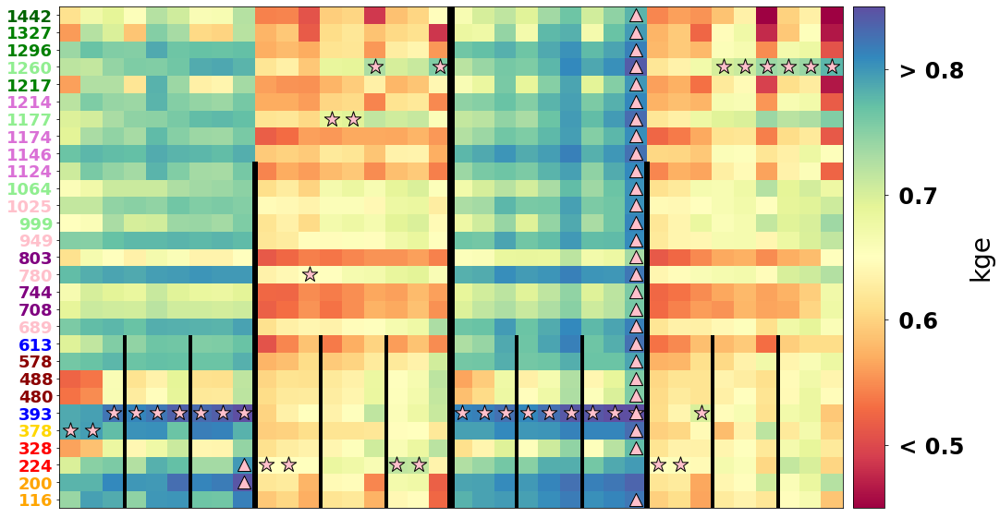
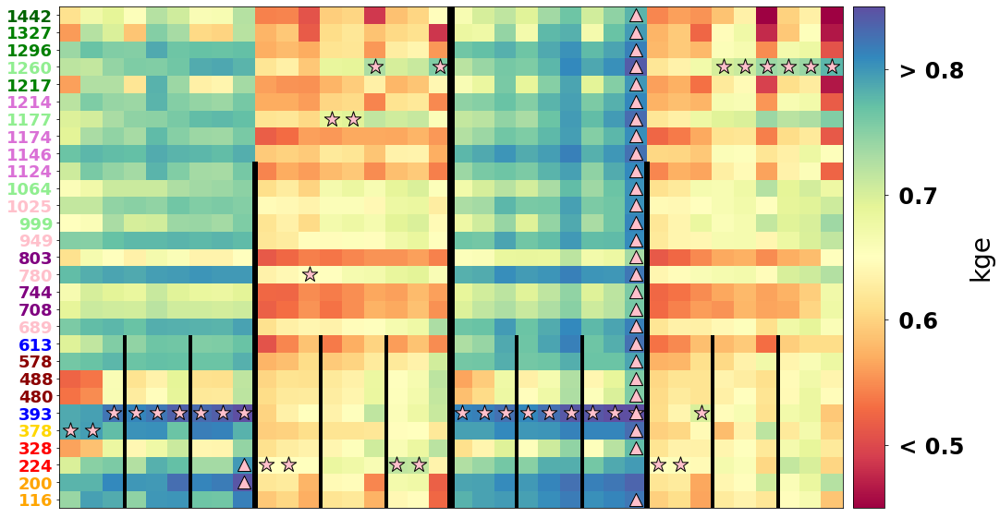

VISUALIZE experiments results
Contenido
10. VISUALIZE experiments results¶
In this visualization notebook, we will see how all the models behave, and how the different parameters affect model performance for the different available models, which are:
Linear models
KNN regression models
XGBoost models
All models have similar and different behaviours. As an example, maybe all behave bad in certain locations, but some models might behave better with local predictors, while others might obtain better results when adding a regional + gradient predictor.
# datasets
import xarray as xr
# append sscode to path
import sys, os
sys.path.insert(0, '/Users/administrador/Documents/geocean-nz-ss')
data_path = '/Volumes/ToshibaJT/geocean-nz-ss/data'
os.environ["SSURGE_DATA_PATH"] = data_path
from sscode.plotting.results import ResultsPlotter
%matplotlib inline
# this is to allow plots to be centered
from IPython.core.display import HTML
HTML("""
<style>
.output_png {
display: table-cell;
text-align: center;
vertical-align: middle;
}
</style>
""")
DATA PATH /Volumes/ToshibaJT/geocean-nz-ss/data
# load the 3 models datasets
linear_stats = xr.open_dataset('../data/statistics/experiments/experiment_linear_final_20220202.nc')\
.sortby(['grad','winds'],ascending=True)
knn_stats = xr.open_dataset('../data/statistics/experiments/experiment_knn_final_20220202.nc')\
.sortby(['grad','winds'],ascending=True)
xgb_stats = xr.open_dataset('../data/statistics/experiments/experiment_xgboost_final_20220128.nc')\
.sortby(['grad','winds'],ascending=True)
print(
'The 3 statistical models have dimensions: \n',
f'LINEAR model: {list(linear_stats.dims)} \n',
f'KNN model: {list(knn_stats.dims)} \n',
f'XGBOOST model: {list(xgb_stats.dims)} \n'
)
print(
'CHECK DIMENSIONS ARE CORRECTLY SORTED WITH SAME VALUES AND CROP TO COMMON ONES!!'
)
The 3 statistical models have dimensions:
LINEAR model: ['site', 'grad', 'winds', 'tlapse', 'tresample', 'region', 'tsize', 'perpcs']
KNN model: ['site', 'grad', 'winds', 'tlapse', 'tresample', 'region', 'tsize', 'perpcs', 'k_neighbors']
XGBOOST model: ['site', 'grad', 'winds', 'tlapse', 'tresample', 'region', 'tsize', 'perpcs', 'n_estimators', 'max_depth', 'min_samples_split', 'learning_rate', 'loss']
CHECK DIMENSIONS ARE CORRECTLY SORTED WITH SAME VALUES AND CROP TO COMMON ONES!!
# crop datasets to same dimensions to compare
linear_stats_red = linear_stats.isel(perpcs=4)
knn_stats_red = knn_stats.max(
dim=['perpcs','k_neighbors'])
xgb_stats_red = xgb_stats.max(
dim=['perpcs','n_estimators','max_depth','min_samples_split','learning_rate','loss'])
10.1. Initialize the class to plot results¶
results = ResultsPlotter(
linear_stats=linear_stats,
knn_stats=knn_stats,
xgb_stats=xgb_stats,
linear_stats_red=linear_stats_red,
knn_stats_red=knn_stats_red,
xgb_stats_red=xgb_stats_red
)
results.plot_histogram()

# %matplotlib
results.plot_studied_locations()
loading the Moana v2 hindcast data...

results.plot_allmodels_stats(stats_plot='xgb', # 'linear'/'knn'/'xgb'
metrics_to_plot=['kgeprime','pocid'],
show_cbar=True)


results.plot_best_stat(show_cbar=True)
 

results.plot_knn_stats()


10.2. PCs analysis¶
import numpy as np
import matplotlib.pyplot as plt
from matplotlib.colors import ListedColormap
fig, axes = plt.subplots(figsize=(50,20),nrows=2)
pc1 = axes[0].pcolor(
linear_stats.kgeprime.argmax(axis=7).values.reshape(29,-1),cmap='summer_r'
)
fig.colorbar(pc1,ax=axes[0])
pc2 = axes[1].pcolor(
(linear_stats.kgeprime.isel(perpcs=1)-linear_stats.kgeprime.isel(perpcs=0)).values.reshape(29,-1),
cmap='seismic',vmin=-0.5,vmax=0.5
)
fig.colorbar(pc2,ax=axes[1])
for ax in axes:
for xline,vs,lws in zip( # add lines to better visualization
[np.arange(0,108,54)[1:],np.arange(0,108,27)[1:],np.arange(0,108,9)[1:],np.arange(0,108,3)[1:]],
[29,24,18,10],[8,6,4,2]
):
ax.vlines(xline,lw=lws,colors='k',ymax=vs,ymin=0)
ax.set_xticks([]), ax.set_yticks([])

10.3. BEST predictors¶
best_linear = xr.open_dataset('../data/statistics/experiments/linear_superfinal.nc')
best_knn = xr.open_dataset('../data/statistics/experiments/knn_superfinal.nc')
best_xgb = xr.open_dataset('../data/statistics/experiments/xgboost_superfinal.nc')
fig, ax = plt.subplots()
best_linear.sel(site=linear_stats.site).kgeprime.squeeze().plot(ax=ax)
linear_stats.isel(
grad=1,winds=1,tlapse=2,tresample=2,region=1,perpcs=3).kgeprime.squeeze().plot(ax=ax)
(best_linear.sel(site=linear_stats.site).kgeprime.squeeze()-\
linear_stats.isel(
grad=1,winds=1,tlapse=2,tresample=2,region=1,perpcs=3).kgeprime.squeeze()
).plot(ax=ax)
ax.set_title('LINEAR')
Text(0.5, 1.0, 'LINEAR')

fig, axes = plt.subplots(ncols=3,figsize=(30,5))
best_knn.sel(site=knn_stats.site).kgeprime.squeeze().plot.pcolormesh(
ax=axes[0],vmin=0.5,vmax=0.8)
knn_stats.isel(
grad=1,winds=1,tlapse=2,tresample=2,region=1).kgeprime.squeeze().plot.pcolormesh(
ax=axes[1],vmin=0.5,vmax=0.8)
(best_knn.sel(site=knn_stats.site).kgeprime.squeeze()-\
knn_stats.isel(
grad=1,winds=1,tlapse=2,tresample=2,region=1).kgeprime.squeeze()
).plot.pcolormesh(ax=axes[2],vmin=-0.1,vmax=0.1,cmap='bwr')
fig.suptitle('KNN')
Text(0.5, 0.98, 'KNN')

best_xgb.sel(site=xgb_stats.site).kgeprime.squeeze().plot.pcolormesh(
col='md',vmin=0.6,vmax=0.85)
xgb_stats.isel(
grad=1,winds=1,tlapse=2,tresample=2,region=1).kgeprime.squeeze().plot.pcolormesh(
col='max_depth',vmin=0.6,vmax=0.85
)
(best_xgb.sel(site=xgb_stats.site).kgeprime.squeeze().rename({'md':'max_depth','mss':'min_samples_split'})-\
xgb_stats.isel(grad=1,winds=1,tlapse=2,tresample=2,region=1).kgeprime.squeeze()
).plot.pcolormesh(
col='max_depth',vmin=-0.1,vmax=0.1,cmap='bwr'
)
<xarray.plot.facetgrid.FacetGrid at 0x7f916ca86ee0>